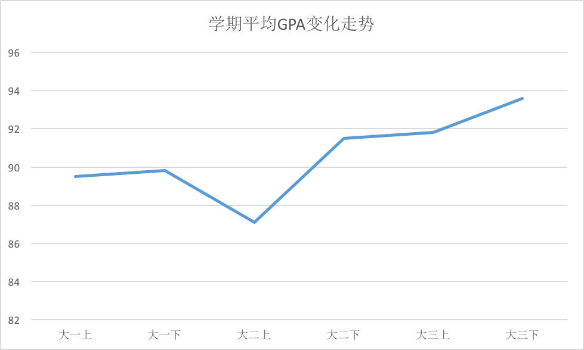
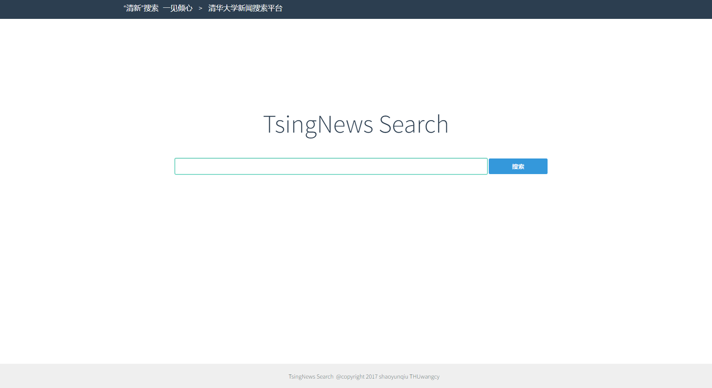
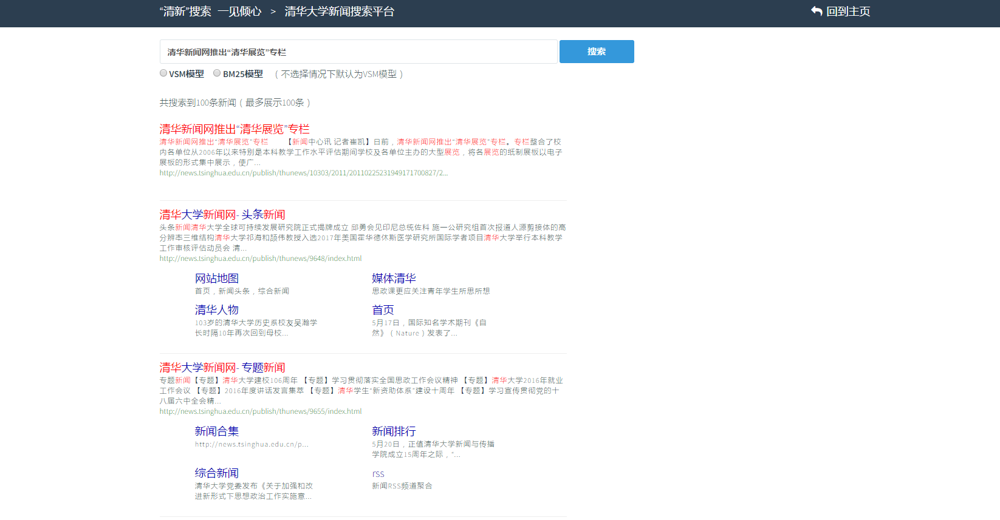
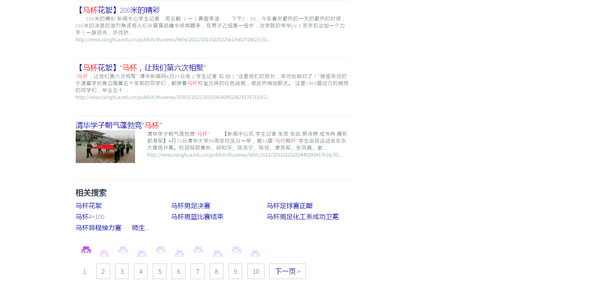
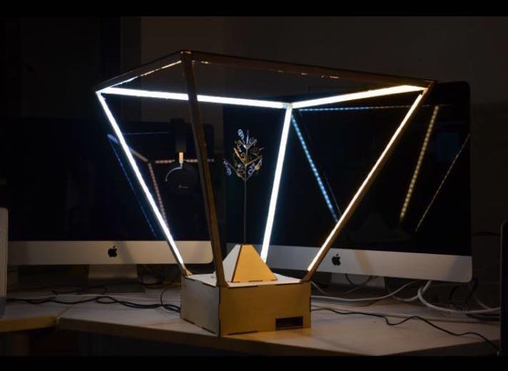
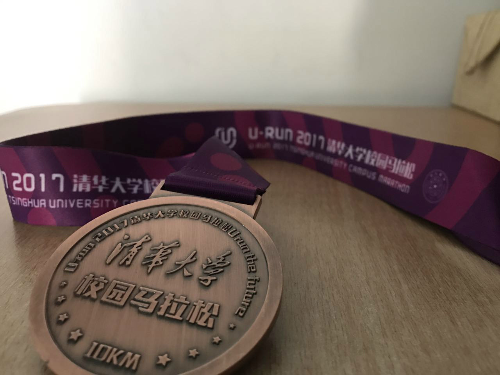

Start from the End——记大三下
Start from the End，这是我高考结束时用来勉励自己的一句话，可以理解为以终为始，从终点重新开始。过了大三下这一学期，本科GPA时代就正式宣告结束了，这意味着日常的学习模式发生了很大的改变，从之前上课、复习、考试这条线转到了以实验室为主的科研模式，再加上实习等等，总之这算是一个终点，也是起点，准备迎接全新的生活。
大三下这学期过得相对平淡，可能是想为GPA画上一个圆满的句号，学期中的主要精力都放在了各门课程上。都说大三上是最艰难的一学期，我倒感觉大三下并不比上学期轻松，各种大作业、小作业有时候也压得喘不过气，可能是选的课比较多，把要求的专业课学分都修完了，中期也坚持没有退课，导致DDL有时候赶到一起就比较爆炸。课程上能讲的比较多，先不说课程学习，说说其他方面做的事情。
实习准备
寒假时就一直在刷leetcode，准备实习面试，想申请一个暑期的实习。最早申的Google实习在寒假时成功过了一面，然而开学后现场二面挂了，虽然感觉表现还可以的，面试官有点坑，给我很不专业的印象，没有思路上的引导，自己表现也不是非常完美，多方面因素吧，Google就这样挂了。后来又听学长推荐申请了依图，刚开始并不是很想去，感觉公司名气也不大，抱着申申看的态度，没想到一连过了三轮面试，拿到了offer。现在还在纠结要不要去，如果实验室那不冲突的话还是想去看看的，毕竟下学期基本没课，一周需要去三天也不是很多。虽然听说那里工作压力挺大，但有好多学长学姐推荐，应该也是不错的，还有钱赚，工资对于实习生还是不低的，能去还是去玩玩，就当找兼职减轻经济负担了。
其实面试准备过程中还是有很多有趣的细节的，准备等在腾讯和依图的实习结束后再总结一下，从准备面试到面试过程再到实习体验进行一下完整的梳理。另外在完善简历方面，上学期又考的一次六级出成绩了，出乎意料的高，609，看来本来为准备托福复习的那段时间还是很有效的。另外一个简历的问题就是项目多是课程项目，等两个实习结束应该能有更拿得出手的项目能写到简历上吧。
社工
这学期的社工就只有学生会运营部副主席了，下半学期运营部普遍也没有什么事情，除了日常事务，也就是学期末筹备了一次学代会，流程比较复杂，筹备时考虑了很多点，但现场还是出了不少小bug，还好没有重大bug，算是圆满完成在学生会的最后一件事了。小朋友们留部也非常积极，所有部员都想留部，最后还分出去两个人担任生权副主席和部长哈哈。
关于竞选下一届学生会主席，我也考虑了很久，最后还是放弃了，想在之后的学期把更多的精力放在科研等其他方面，担任学生会主席，对于我这种喜欢完全把握自己所负责事情的人，要消耗太多精力了，不是很有信心能同时做好其他方面的事情。直到竞选前夕，还有好多人劝我去参加竞选，真的感谢大家的支持与信任，玉涵和天成都相当优秀，也相信最后玉涵会带领学生会走的更远，我就安心退休啦。
虽然在学生会退休了，下学期还是被晖哥拉到团委担任了综合口的副书记，这里事情不算很多，事务性工作我也熟悉，算是发挥一下余热吧，也能通过此多接触一些资源。不过这也是我第一次直接空降担任以前完全不了解的部门负责人，下学期还要多了解，争取在哪都干好自己的工作。
实验室
这学期基本确定了之后会在人智所信息检索实验室读博了，具体老师还没确定，之前一直是和刘奕群老师联系的，现在跟着张敏老师先试着做一做用户推荐方面的研究，暑假中还安排着要读一些相关论文做好知识储备。
这学期最终决定读博，也是考虑了挺久的，一方面不想直接工作，深造的话对我来说在本校可能比出国更能学到更多知识，出国的各种准备于我而言也有点晚了；留校的话不想把自己打造成一个偏工程的程序员，而硕士目前培养方向都改为工程型，没有研究型了，再加上硕士名额那么少，自己竞争力也不确定够不够；对于搞科研感觉还是有一定兴趣的，但也不算是特别喜欢那种，所以选择个性化推荐这个方向，科研上这个问题相对open，可以做的点不少；如果以后不搞科研这个方面在各个公司也都有需求，可以直接拿来用在产业上，算是一个可进可退的方向。总之在各种考虑下吧，做出了这个决定，以后也会好好在这个方面努力，争取让自己不后悔这个选择。
学期中除了组会刷脸，还做了一点东西。主要是某次组会听一个学长说有点想做互动百科虚假词条预测，感觉挺有意思就想跟着做做。本来想跟着打打杂，结果学长最后不做了，变成我自己负责这个课题，就比较懵逼。构思了很久的研究方法，结果在实施的时候遇到了很多问题，用的一个其他实验室学长爬的互动百科历史页面，但很难从中找出十分valid的虚假词条，基于某些条件比较历史页面和现有页面来进行过滤选取candidate的话也总会因为访问url过多被断掉socket。总之在第一步就碰壁了，下学期看有时间再继续解决一下这个课题。
学习
这学期自认还是挺努力的，对待各门课程都比较认真，平时在课程上花的时间也很多。最后也是达到了成绩的巅峰，自从大二下立志提高GPA后成绩节节攀升，同时也深感一学期玩脱要花很多学期来弥补，这么三学期才算填上大二上的坑。总之算是为GPA画上一个圆满的句号了。

- 操作系统 [94]
这个课算是这学期的主课了，一星期要上两次课。很多要出国的同学都因为这课给分低事情杂退了操统大四再修。实际上这门课确实事情很多，大的来说有8次LAB，逐步完成一个ucore操作系统的代码，虽然每次只是填一些关键代码，而且几乎是不看答案写不出来那种，但还是挺有收获的，能真正深入代码层面了解一个操作系统是怎样运作起来的，做完最后一个实验能在用户态跑起来bash确实感觉很有成就感；除了8个LAB，每次课之后几乎都会有小作业，虽然这些作业不算分，但我还是非常强迫症地把它们都写完了，还是有很大帮助理解的作用的。
这门课也是我这学期听课最认真的一门，着实学到了很多东西，从一开始连操作系统一般用什么语言写的都不知道，到最后对各方面都有一定的了解。虽然感觉之后自己不会做这方面研究，但学起来还算有趣，选的陈渝的课，讲课也算不错，总之还是挺喜欢这门课的。
一共有期中期末两次考试，期中正常，期末难的诡异。但平时听课还算认真，考试发挥出了正常应有的水平，LAB也做了不少扩展，再加上最后的调分，结果还不错。要说对这门课的建议，就是开始时教学和实验使用的平台、工具太过分散，很难上手，希望之后能有一个整合所有信息的平台。
- 搜索引擎技术基础 [93]
实验室刘奕群老师的课，概论性地学习搜索引擎的知识，没有考试，只有三次实验和一个大作业，还是挺良心的。小作业涉及搜索引擎评价、pagerank计算和简单图片搜索引擎搭建。大作业是做一个相对完善的清华新闻搜索引擎，和邵哥组队，自己本身不是大腿，carry不起来，不过合作写的结果还不错。我主要负责页面抓取和前端，发挥一下软工时作为一名前端的余热，为了实现一些扩展研究了很多JSP的ajax请求等；邵哥后端也相当给力，还成功应用数据库知识建了Trie树实现查询提示功能。总之最后做出来一个还比较满意的搜索引擎。



- 现代密码学 [99]
要我现在推荐刷分的专业课的话，我一定推荐网络安全技术和现代密码学，两个课学的东西有点像，都是古典密码、现代密码、密钥交换等算法，并且给分良心。密码学只有三次作业，除了第一次比较难写，其他都还好，大作业还抱了黄大大大腿。考试开卷，认真过一遍ppt一般都没有问题。说到期末考试还特别有趣，当时网络学堂给分时我看期末只有78分，马上找助教查卷发现其实是98分……没想到还真能遇到这种操作。
- 数学实验 [90]
通过这门课好好学习了一下matlab的应用，收获还是挺大的。作业是10次matlab解决实际问题的实验，本身倒不难，重点是实验报告动辄几十页，非常费时间。不过我还挺喜欢写这种报告的，寒假学习的Latex也充分发挥了作用，每次看到精心排版的几十页报告都有种迷之成就感，代价就是要花一整天的时间去码报告。期末考试也是用matlab解题，写的挺顺的，可能还是哪计算出错了吧，总分不算高。
- 数据库专题训练 [96]
本来以为是讲数据库使用的，结果是实现底层数据库操作的。讲了近似查询、近似连接、即敲即得检索和空间检索。作业基本等同于三道有点难度的数据结构题，OJ评测，拼的是程序效率。发现自己还是不善于把程序写快，第一次纯自己优化到最后还是比较慢，第二次和大作业分别借鉴了学长和黄大大的思路，效率还是能看的。这个大作业检查还相当刺激，现场跑较大的数据集结果程序炸了，赶紧跑到实验室开始调，那天下午还有个考试，非常焦虑。多亏黄大大远程协助调试，全靠室友情，总算及时调了出来。另外这个课的给分真的很水，助教检查大作业也不怎么认真，就记录时间，据说前几名都是100，比较推荐选，已经算事情不怎么多给分还良心的专业课了。
- 计算机系统结构 [91]
这个课真的…有太多想吐槽了。首先它的课程内容和计算机组成原理、操作系统有很多重合，放到大三下这个位置就很尴尬，有点鸡肋；其次课程质量不高，ppt中英混合、风格不一、错误百出，老师还会讲着讲着觉得自己语无伦次讲不下去了？？？另外作业的实验比较坑，第一次实验要很老的Linux，第二次实验实现算法还要自己画演示界面，一个评测系统就可以解决的事情，还要画完全是体力劳动的界面，真的是… 总之，从各种方面都觉得这个课历史遗留因素很多，个人而言觉得可以取消或改良。期末考试是面面俱到那种，复习压力还挺大，考的不太好，下来之后就想到很多写错了，也懒得计较了。
这个课唯一亮点可能就是布置作业时疯狂在网络学堂卖萌的助教了，结果竟然不是可爱的男孩子。
- 机器学习概论 [97]
想通过这个课系统地学习一下机器学习知识，毕竟老师也是实验室的老师，以后会经常用到的。课上学的东西很杂，毕竟概论课，监督学习、无监督学习、强化学习、集成学习、深度学习都有涉及，介绍了典型的算法。但课上没怎么学会，全靠期末梳理一遍才学会，系统地学习一下感觉收获挺多，至少现在实习就在用这个课上学到的东西，甚至有些作业代码都能拿来用。说起来当时还申请了大作业替代考试，课题就是实验室那个互动百科虚假词条预测，结果最后夭折了，才又选择参加了期末考试。现在想想还是正确的选择，不然估计这个课不在期末复习一遍的话学不到什么。期末的成绩比较惊讶，因为当时前面题写的太仔细了，最后一道20分设计题只有不到10分钟写，很多点都没写上，一通瞎写，不知道怎么得这么高分，有点迷，难道老师助教因为我是实验室的学生还有师生情
- 党的知识概论 [通过]
这学期上了党课，其实我自己而言不是很有意向入党的，乔导一直在发展我入党，就先上个党课看看吧。课程中没什么印象，都是讲座，唯一印象深的可能是期末考试，中间上个厕所回来发现全都提前交卷走了……留下我一个人在下面默默答题，助教们在上面改其他人卷子。
- 体育专项(2)——花样轮滑 [78]
这学期体育选了花样轮滑，感觉挺喜欢的。小时候滑过一点，不过没有学过，但有点基础学起来很快，到最后老师教的动作都能做出来了，至少水平已经到了以后可以教自己孩子入门的级别了哈哈。马汝平老师我也十分喜欢，第一节课我回去就和室友说这个老师声线好棒，再后来老师分享个人经历的时候得知老师果然学过唱歌，差点走上演艺事业。除了唱歌老师经历相当丰富，各种领域都干过，而且非常出色，舞蹈、体育、唱歌各个擅长。教学也非常耐心，总之非常nice了。
- 数字娱乐设计(2) [88]
这学期美双的主课，抱霖哥的大腿，做了一个依靠振动频率和灯光频率微小相位差来欺骗视觉的装置，能做出肉眼看到高速相机慢放的效果。听起来很炫酷，做出来效果一般，不是特别明显，但还是挺厉害的，至少剪辑出来的宣传视频很强。为了肝这个大作业在一教度过了好几个通宵，几个人深夜调参、点外卖、轮流工作睡觉还是挺欢乐的。另外比较有趣的是ddl前一天晚上，视频来不及渲染出来了，就强行破解隔壁兴趣团队工作站的电脑密码，现装AE渲染，终于在展示当天早上渲染出来了。
项目中硬件方面全靠霖哥carry，我主要做了Arduino方面的单片机控制，以及搭了个网站方便直接调试参数，其他感觉就在划水了。最后混了个优秀课程作品，可能下学期的美双毕业设计也可以在此基础上延伸了。

- 游戏交互技术 [94]
感觉是一个推广microduino的课，那边公司的人作老师带我们做项目。当时刚做完数字娱乐设计的项目，都有点疲惫了，所以大家积极性不高。项目主题是“古为今用”，古代科技结合智能硬件。最终我们组花了三天做出来一个非常非常迷的“走鸟灯”，借鉴走马灯，不过我们映出来的是鸟，搭配外壳上的地图和声控装置，像玩flappy bird一样。想法自认为还是挺不错的，只是时间精力有限做出来的比较简陋。另外比较有趣的是有一次课在国家科技馆上，顺带参观了科技馆，像小学生一样各种交互装置玩得停不下来哈哈。


- 游戏分析与评测 [80]
- 娱乐产业运行系列讲座 [通过]
这两门课一次都没有去过，正赶上大作业ddl堆积的时候。都是理论课程，看ppt和以前讲的好像差不多，不做评价了。
生活
想了想这学期生活上真的没有很多改变：学期初办了学校钢琴房的练琴卡，前半学期有空还去了几次，环境不错，后来忙起来就没时间去了，基本算是荒废了一学期，也没学新曲子；复习操统的过程中感觉一直坐着很难受，心血来潮买了一个站立编程的桌子，从此可以在寝室不断切换姿态，娱乐的时候坐着，学习的时候站着，还是挺有用的；生日时梁送了专业的电竞鼠标，又自己换了个好鼠标垫，大力优化了一下守望先锋的游戏环境；来腾讯实习前趁steam夏日特惠入手了2B小姐姐（Nier: automate）和Little Nightmare，回去之后有的玩了。
这学期还跑了校园马拉松的10公里，之前跑过最长也就是体育考试的3公里了。本来信心满满，感觉3公里成绩一直还不错，前面就加了点速，结果就是后5公里异常煎熬，基本以老年人跑法完成了赛程。跑步过程中的目标从较快完成比赛，到不休息完成比赛，再到休息不超过3次……最后总算中间停下来休息3次完成了比赛。结束之后也是比较惨，上楼下楼以100%的概率抽筋，还得感谢室友黄大大协助才回到了寝室；脚上也磨出了几个水泡，跑鞋这东西真的是跑得远才知道合不合脚，平常跑步感觉没什么问题，这次最后几公里磨出泡后每一步都是疼的；更惨的是第二天还是美双大作业ddl，回寝室床都没上，就休息了一会又赶去一教肝了一通宵大作业，这可能是我最青春的一次了[捂脸] 不过这也算解锁了新的人生成就吧，虽然是老年人跑法，但最后强忍疼痛完成比赛相当有成就感，就当磨练意志了吧哈哈，也提醒我之后要注意多锻炼身体了，不能天天咸鱼。


结语
从大一辅导员要求写学期总结开始，到后来自发地记录每学期的生活，深感总结还是一个很有趣也很有意义的事情，之后的学期应该还会坚持下去。也想过应该开一个自己的博客了，不能总发到QQ空间吧，但总是懒，暑假中有时间搞一下这个事吧。
这学期的话，可能最满意的就是为GPA画上了圆满句号，达到了所期望的水平；未来方向上做出了无悔于自己的选择；准备实习的过程也大大充实了我自己；生活上各方面也没有什么大的波折，总之算是比较完满地结束了。过了这学期，就走到了本科这一阶段的终点，在新的起点处，我会继续努力，加油！Start from the End.